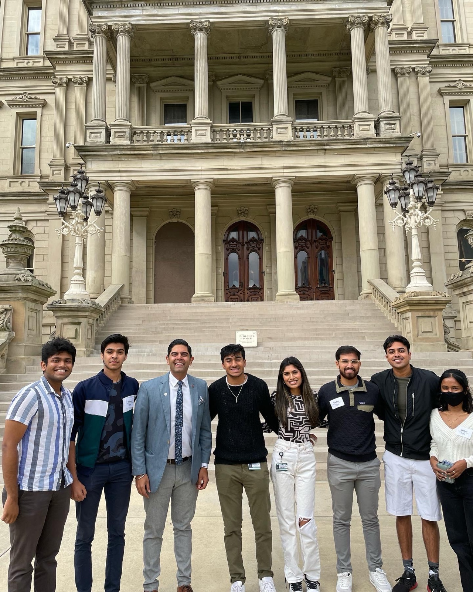
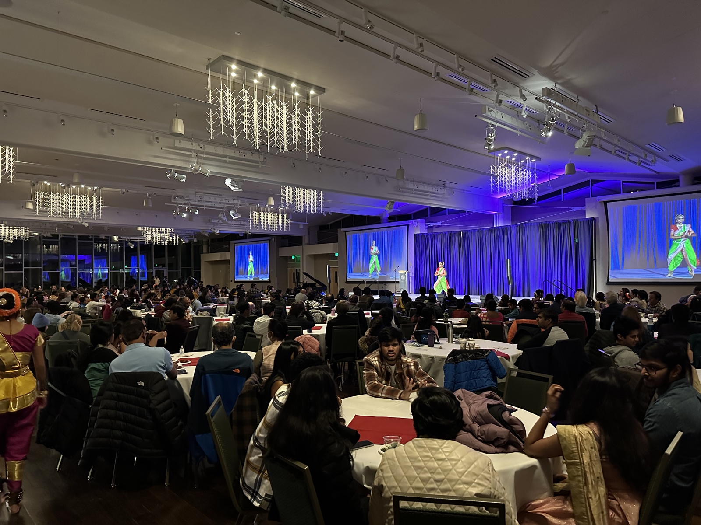
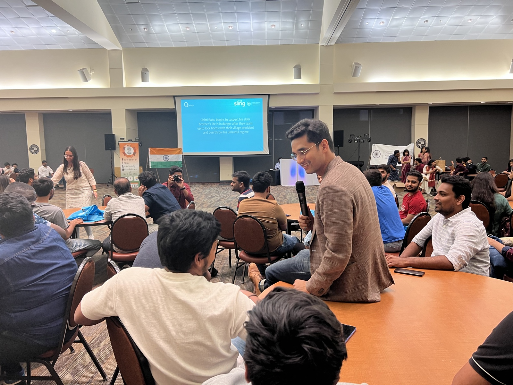
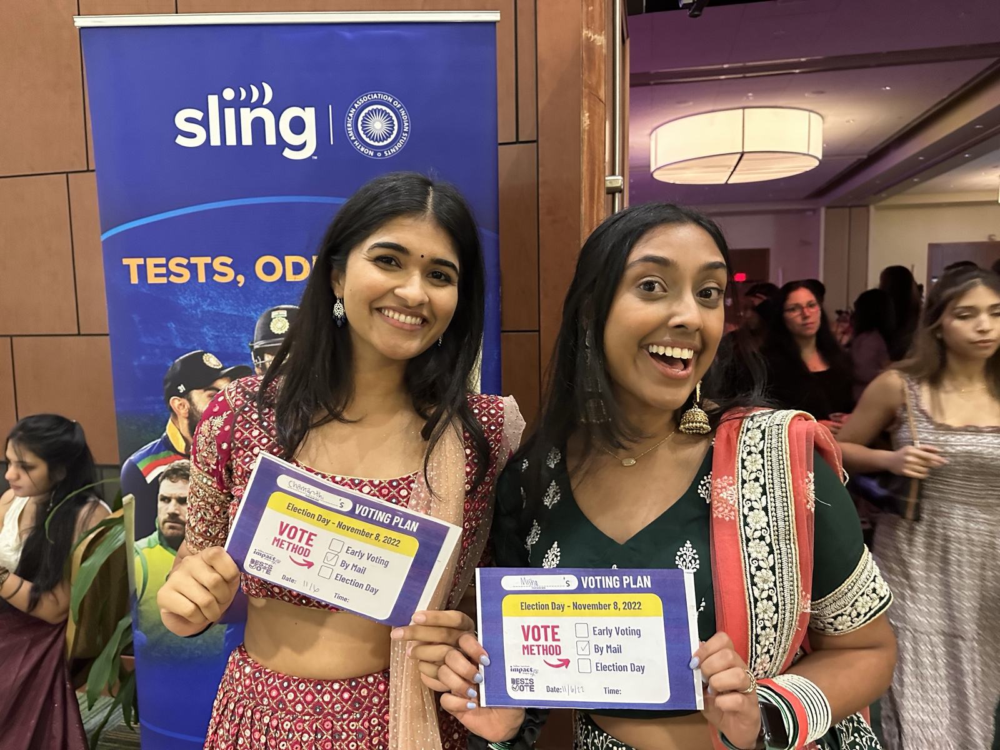
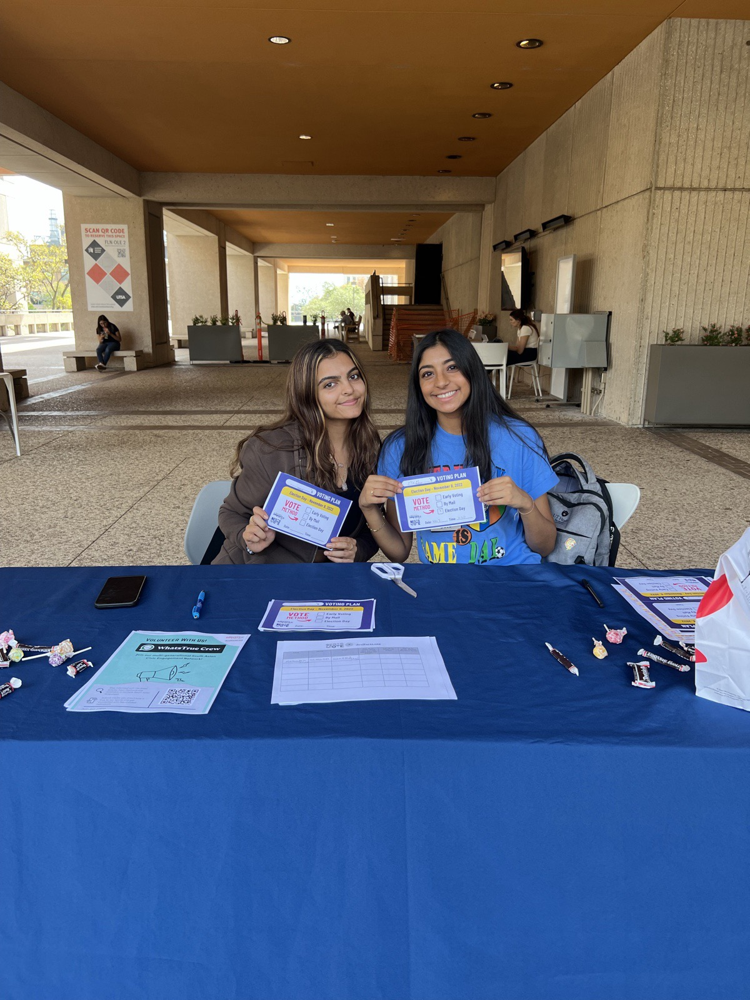

Indian Americans are young, growing, and already living at the center of American politics. Our political infrastructure has not caught up to our numbers.
Astra Civic Fund organizes Indian Americans as Indian Americans — not as a foreign lobby, not as a religious proxy fight, not as a photo-op constituency.
We are here because Indian Americans are affected every day by American policy. And because the existing infrastructure has not kept pace with the community it claims to represent.
We are here because Indian Americans are affected every day by American policy: immigration backlogs, health care, education, small business permitting, public safety, housing, student debt, hate crimes, local representation, and who gets heard when decisions are made.
Our politics are domestic. Our work is local. Our ambition is national.
Astra · The Premise
Astra exists to organize this community as a domestic political force — with real needs, real votes, and real leverage. Not symbolism. Power.
We are pro–Indian American. Period.
We will work with Democrats, Republicans, independents, mayors, governors, school board members, legislators, and candidates who take our community seriously.
Especially young Indian Americans. The community is bigger and broader than the rooms politicians keep walking into.
Too often, campaigns see a wealthy donor class, a few famous CEOs, or a handful of loud voices — and mistake that for the whole community.
But the real Indian American story is bigger: the med student trying to understand health policy. The engineer who has never been invited into local politics. The motel family in Ohio. The parent on an H-4 visa learning English and starting a business. The grandparent at the temple, or the mandir, who wants to be heard but does not know where to begin.
Indian Americans are one of the highest-earning and fastest-growing communities in the country, but our political power is still underbuilt. Campaigns know our donor potential. They know our turnout potential. What they have not built is a serious, modern infrastructure to reach the full community: students, young professionals, small business owners, physicians, engineers, parents, grandparents, and first-time political donors.
Astra exists to close that gap. That is the majority we are organizing — not the donor class, not the diaspora elite, but the everyday Indian American whose vote, voice, and leverage have been left on the table for two decades.
Our organizers can. That is why we begin where we do — and with whom.
A pollster may not reach an Indian aunty at temple. A campaign staffer may not know how to talk to a first-generation college student at a garba practice. A candidate may not understand why green cards, residency slots, tariffs, permits, school boards, and city councils all belong in the same conversation.
But our organizers can.
Astra starts with young Indian Americans because they are not just a demographic. They are the bridge. They can reach their peers, their parents, their grandparents, their campuses, their religious spaces, and the civic rooms where our community has been absent for too long.
A candidate may not understand why green cards, residency slots, tariffs, permits, school boards, and city councils all belong in the same conversation.
Astra · The Bridge
Food drives, voter drives, organizer trainings, candidate briefings, issue conversations: all of it is political infrastructure.
Astra's work is built on a simple bet: if you organize the community before election season, the votes — and the leverage — follow.
Civic infrastructure is built in the years between elections, not the weeks before. Astra resources organizers, chapters, and relationships year-round — so when a race matters, the community is already organized.
We are starting in the places that national politics often treats as flyover territory — but where Indian American communities are growing, working, studying, worshipping, building businesses, and raising families.
D.C. may be where the receptions happen. It is not where our power begins.
The pattern is the same wherever the work goes: campuses first, temples and cultural associations next, small business corridors after that. Then races.
Six states. Six communities. Photos from the campuses, temples, city halls, and living rooms where Astra is showing up.





It is not chaos. It is directed will.
In Hindu mythology, an astra is a weapon of cosmic intent: invoked with purpose, guided by principle. We chose the name because democracy, too, requires force. Not chaos. Directed will.
The name also carries aspiration: looking upward, reaching beyond what was supposed to be possible. It names the gap between what a community is told it can ask for, and what it actually has the standing to demand.
Astra is what we summon when waiting is no longer enough.
Astra · The Meaning
Some things must be summoned. The next chapter of Indian American political life is one of them — directed, deliberate, and built on purpose rather than waited for.
Help us build the machinery — organizers, chapters, voter contact, campus networks, local relationships, race strategy — and a generation of Indian Americans who know exactly where they belong in American politics.
The question is not whether Indian Americans have numbers. The numbers are settled. The question is what we do with them — and who builds the structures that turn them into leverage.
Field organizers, campus leads, fellowship cohorts. Indian Americans organizing Indian Americans, with the cultural fluency that traditional campaigns lack.
Michigan first. Illinois. Ohio. Then outward. Each chapter rooted in local relationships — campuses, temples, cultural associations, small business corridors — not airdropped staff.
Texts, calls, doors, in-language outreach, and the kind of community trust no consultant can buy. Built once and maintained year-round.
Indian American students are already the bridge between generations. Astra resources their organizing, trains their fluency in policy, and brings them into civic rooms early.
Food drives, mentorship, candidate forums, school board engagement. The work that earns the standing to be heard later — when it matters.
We identify races — federal, state, local — where Indian American voters can make the difference, and we resource those races accordingly.
Build the machinery with us. Organize as Indian Americans. Show up where it matters. The next chapter of this community begins with the people who decide it is theirs to write.
Photographs courtesy of community organizations and event participants. Quotes attributed to "Astra" represent the project's editorial voice rather than verbatim source material. Figures are rounded to the nearest tenth and reflect the most recent publicly available data at time of publication. For corrections or source requests, write to info@astracivic.org.